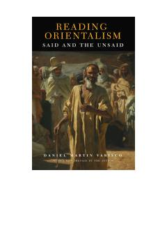

ROEdvard Saidning "Orientalizm" asarining chuqur va tanqidiy tahlili.
Ushbu kitob Edvard Saidning mashhur "Orientalizm" asarini tanqidiy tahlil qilib, G'arbning Sharq haqidagi tasavvurlari va yashirin ma'nolarni o'rganadi. Muallif Daniel Martin Varisco sharqshunoslik fanining asoslari va madaniyatlararo munosabatlarni chuqur ochib beradi. Kitob Sharq va G'arb o'rtasidagi intellektual muloqotni tushunishda muhim manba hisoblanadi.